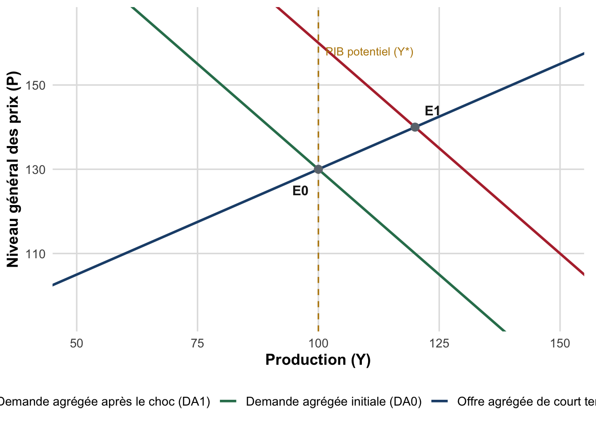

TD 4 : Contrôle continu blanc 1 (entraînement)
Synthèse Chapitre I et Chapitre II (partie 1), entrée dans la théorie
Sujet d’entraînement (2h) : QCM, lecture de graphique OA-DA, exercice de calcul d’indicateurs du marché du travail, questions de réflexion. Barème indicatif sur 20 points, réponses exemples incluses.
ImportantCe sujet est un entraînement
Ce document est un sujet d’ENTRAÎNEMENT (blanc). Ce n’est pas le sujet du contrôle continu noté : il sert à s’exercer au format et au niveau attendus pour le CC1. Les questions sont originales (elles ne reprennent pas le sujet réel de l’épreuve) mais couvrent le même programme et le même niveau de difficulté. Une réponse exemple est fournie après chaque question, dans un encadré repliable : essayez de répondre par écrit avant de la consulter.
Objectifs de cet entraînement
- Restituer les définitions et mécanismes clés du Chapitre I : mesure du PIB, fondements de la politique économique, règle de Tinbergen, fonctions de Musgrave.
- Mobiliser le modèle offre agrégée-demande agrégée (OA-DA) (la première formalisation théorique du cours) pour lire et interpréter un graphique de choc macroéconomique.
- Restituer les définitions et indicateurs du Chapitre II, partie 1 : mesures du marché du travail (BIT/INSEE, France Travail), typologie des chômages.
- Calculer et interpréter les taux d’emploi, de chômage et d’activité à partir de données chiffrées, et discuter les limites de ces indicateurs.
- S’entraîner à rédiger une réponse argumentée et structurée sur un temps contraint.
NoteModalités indicatives (à titre d’entraînement)
- Durée conseillée : 2 heures, dans les conditions du contrôle continu.
- Documents : aucun document autorisé ; calculatrice autorisée.
- Barème : indicatif, sur 20 points, répartis en quatre parties (détail ci-dessous). Ce barème reproduit la structure du CC1 réel mais les points affichés ici sont indicatifs pour l’entraînement.
- Consignes de rédaction :
- Pour le QCM (partie I), une seule réponse est correcte par question ; recopiez la lettre choisie, aucune justification n’est demandée dans le sujet réel (mais utile pour s’entraîner).
- Pour les parties II à IV, justifiez systématiquement vos calculs et raisonnements : une réponse correcte non justifiée n’obtient pas la totalité des points.
- Soignez la présentation : phrases complètes pour les questions de réflexion, calculs détaillés (formule puis application numérique) pour l’exercice.
| Partie | Intitulé | Points |
|---|---|---|
| I | QCM (10 questions) | 7,5 |
| II | Lecture de graphique (modèle OA-DA) | 3 |
| III | Exercice : indicateurs du marché du travail | 6 |
| IV | Questions de réflexion | 3,5 |
| Total | 20 |
NotePré-requis
Cet entraînement porte sur le Chapitre I (Introduction à la politique économique) et la partie 1 du Chapitre II (Marché du travail : définitions, mesures, typologie des chômages), ainsi que sur vos notes des CM 1 à 4 et des TD 1 à 3. Relisez en particulier les résumés de cours (Chapitre I, Chapitre II) avant de vous entraîner.
Partie I : QCM (7,5 points)
Pour chaque question, une seule réponse est correcte (0,75 point par question). Essayez de répondre avant d’ouvrir la réponse exemple.
1. Un pays enregistre les taux de croissance trimestriels suivants : T1 : +0,2 % ; T2 : -0,1 % ; T3 : +0,3 % ; T4 : -0,4 %. Peut-on parler de récession sur cette année ?
- Oui, car deux trimestres affichent une croissance négative.
- Non, car il n’existe aucun couple de trimestres consécutifs affichant tous deux une croissance négative.
- Oui, car la croissance moyenne annuelle est négative.
- Non, car le PIB en niveau reste toujours positif.
NoteRéponse exemple
Réponse : B. La récession se définit comme au moins deux trimestres consécutifs de croissance négative. Ici, T2 (-0,1 %) et T4 (-0,4 %) sont négatifs mais séparés par T3 (positif) : ils ne sont pas consécutifs. Il n’y a donc pas de récession technique sur cette année, même si deux trimestres sur quatre affichent une croissance négative. A confond « deux trimestres négatifs » et « deux trimestres négatifs consécutifs » ; C invoque un critère (moyenne annuelle) qui n’est pas celui de la définition ; D est vrai mais n’est pas le bon argument (un pays peut être en récession avec un PIB en niveau toujours positif, seul le rythme de variation compte).
2. Le PIB par habitant de la Chine est très inférieur à celui de la France en dollars courants, mais l’écart se réduit fortement lorsqu’on le mesure en parité de pouvoir d’achat (PPA). Que traduit cette correction ?
- La PPA corrige les écarts de coût de la vie entre pays, ce qui permet de comparer le pouvoir d’achat réel plutôt que la seule conversion monétaire au taux de change.
- La PPA corrige les écarts de population entre pays.
- La PPA mesure le taux de change officiel fixé par les banques centrales.
- La PPA n’a de sens que pour les pays de la zone euro.
NoteRéponse exemple
Réponse : A. La correction en parité de pouvoir d’achat (PPA) neutralise les écarts de coût de la vie entre pays : un même revenu monétaire converti au taux de change ne permet pas d’acheter la même quantité de biens partout, car les prix locaux diffèrent. La PPA est donc l’outil pertinent pour comparer le niveau de vie réel, non le taux de change (C) ni un ajustement démographique (B) ; elle s’applique à la comparaison internationale en général, pas seulement à la zone euro (D).
3. Un gouvernement poursuit simultanément deux objectifs, la stabilité des prix et le plein emploi, mais ne dispose que d’un seul instrument indépendant : le taux directeur de la banque centrale. Que prédit la règle de Tinbergen dans cette situation ?
- Les deux objectifs seront atteints simultanément, car le taux directeur agit sur l’ensemble de l’économie.
- Il est structurellement impossible d’atteindre les deux objectifs simultanément avec un seul instrument indépendant ; il faudrait un second instrument (par exemple budgétaire).
- Il suffit d’augmenter fortement le taux directeur pour atteindre les deux objectifs.
- La règle de Tinbergen ne s’applique qu’aux politiques budgétaires, pas aux politiques monétaires.
NoteRéponse exemple
Réponse : B. La règle de Tinbergen impose de disposer d’au moins autant d’instruments indépendants que d’objectifs poursuivis simultanément. Avec un seul instrument (le taux directeur) pour deux objectifs (prix et emploi), l’un des deux objectifs sera nécessairement sacrifié en cas de conflit entre eux ; il faut un second instrument indépendant (par exemple la politique budgétaire) pour espérer atteindre les deux. La règle s’applique à toute politique économique, pas seulement budgétaire (D).
4. L’État finance par l’impôt un phare maritime, dont l’usage par un navire ne réduit en rien la possibilité pour d’autres navires de s’en servir également (bien non rival et non exclusif). De quelle fonction de Musgrave relève principalement cette intervention ?
- La fonction de stabilisation.
- La fonction d’allocation.
- La fonction de redistribution.
- La fonction de régulation monétaire.
NoteRéponse exemple
Réponse : B. La fonction d’allocation vise à corriger les défaillances de marché (biens publics, externalités) en assurant une production optimale de biens que le marché seul ne fournirait pas, ou pas en quantité suffisante : un phare, non rival et non exclusif, en est l’exemple canonique. La stabilisation vise les fluctuations conjoncturelles (A), la redistribution corrige les inégalités de revenus (C) ; la « fonction de régulation monétaire » (D) n’existe pas dans la typologie de Musgrave.
5. Dans le modèle OA-DA, ce qui explique la pente croissante de la courbe d’offre agrégée de court terme est :
- La rigidité des salaires nominaux à court terme, qui fait varier le salaire réel (donc la rentabilité de la production) lorsque les prix changent.
- La flexibilité parfaite des prix et des salaires à court terme.
- L’indépendance totale de la production par rapport au niveau des prix à court terme.
- La hausse mécanique de la productivité du travail avec le niveau des prix.
NoteRéponse exemple
Réponse : A. À court terme, les salaires nominaux (\(W\)) sont rigides : ils ne s’ajustent pas immédiatement aux variations de prix. Une hausse du niveau des prix \(P\), à \(W\) donné, réduit donc le salaire réel \(W/P\), ce qui abaisse le coût réel du travail pour les entreprises et les incite à produire davantage : la relation entre \(P\) et \(Y\) est croissante. B et C décrivent au contraire les hypothèses du long terme (flexibilité totale) ou une absence totale de lien, qui contredisent la pente croissante de court terme.
6. Le PIB potentiel \(Y^\ast\), autour duquel la courbe d’offre agrégée de long terme est verticale, est déterminé par :
- Le seul niveau général des prix.
- Les facteurs d’offre disponibles : stock de capital, quantité et qualité du travail, technologie.
- Le niveau de la demande agrégée anticipée par les entreprises.
- Le taux d’intérêt directeur de la banque centrale.
NoteRéponse exemple
Réponse : B. À long terme, prix et salaires s’ajustent pleinement : la production se cale sur son niveau potentiel \(Y^\ast\), déterminé par les capacités productives de l’économie (capital, travail, technologie), indépendamment du niveau des prix. C’est pourquoi la courbe d’offre agrégée de long terme est verticale en \(Y^\ast\) : aucune variation de \(P\) ne peut, à elle seule, déplacer \(Y^\ast\) (A, C et D relèvent tous de déterminants de court terme ou de la demande, pas de l’offre potentielle).
7. Une économie initialement à l’équilibre \(E_0\) (en \(Y^\ast\)) connaît un choc conduisant à un nouvel équilibre \(E_1\) où, par rapport à \(E_0\), la production \(Y\) et le niveau des prix \(P\) augmentent tous les deux. De quel type de choc s’agit-il le plus probablement ?
- Un choc d’offre négatif.
- Un choc de demande positif.
- Un choc d’offre positif.
- Il est impossible de le déterminer sans connaître la nature exacte du choc.
NoteRéponse exemple
Réponse : B. La signature d’un choc de demande est que \(Y\) et \(P\) varient dans le même sens (la courbe DA se déplace le long d’une courbe OA_CT inchangée) ; à l’inverse, un choc d’offre fait varier \(Y\) et \(P\) en sens opposé (stagflation pour un choc d’offre négatif, l’inverse pour un choc d’offre positif). Ici \(Y\) et \(P\) augmentent tous les deux : c’est la signature d’un choc de demande positif (déplacement de DA vers la droite), pas d’un choc d’offre (A et C sont donc à exclure), et la question est ici parfaitement identifiable (D est faux).
8. Parmi les quatre personnes suivantes, laquelle est comptabilisée comme chômeur au sens du BIT (INSEE) ?
- Claire, en congé maladie depuis six mois, qui conserve son contrat de travail.
- David, qui ne travaille pas, ne recherche pas d’emploi et a cessé toute démarche depuis un an, découragé.
- Emma, sans emploi, disponible pour travailler sous quinze jours, ayant envoyé cinq candidatures la semaine dernière.
- Farid, étudiant à temps plein, qui ne recherche pas d’emploi.
NoteRéponse exemple
Réponse : C. Emma remplit les trois critères cumulatifs du BIT : sans emploi, disponible pour travailler dans les deux semaines, recherche active récente (candidatures envoyées). Claire est en emploi (son contrat est actif malgré l’arrêt maladie) : A est donc fausse. David ne remplit pas le critère de recherche active : il relève du halo autour du chômage (personne proche du marché du travail mais non comptée comme chômeur BIT), pas du chômage au sens strict. Farid est inactif (étudiant, ne recherche pas) : D est fausse.
9. Léa est inscrite à France Travail. Elle exerce une activité réduite de plus de 78 heures par mois tout en continuant à rechercher un emploi à temps plein. Dans quelle catégorie de France Travail est-elle enregistrée ?
- Catégorie A.
- Catégorie B.
- Catégorie C.
- Catégorie D.
NoteRéponse exemple
Réponse : C. Les catégories B et C regroupent les demandeurs d’emploi en activité réduite, tenus de continuer à rechercher un emploi : la catégorie B correspond à une activité réduite courte, la catégorie C à une activité réduite longue (au-delà d’un seuil horaire mensuel, ici dépassé). La catégorie A regroupe les personnes sans aucune activité (A est donc fausse), la catégorie D les personnes non tenues de rechercher un emploi (formation, maladie…), ce qui ne correspond pas au cas de Léa.
10. Une usine textile automatise sa chaîne de production et supprime durablement 300 postes peu qualifiés, qui ne seront pas recréés dans le secteur. De quel type de chômage relève principalement cette situation ?
- Chômage frictionnel.
- Chômage technique.
- Chômage technologique (structurel).
- Chômage keynésien.
NoteRéponse exemple
Réponse : C. La substitution durable du capital (les machines) au travail dans un objectif de hausse de la productivité définit le chômage technologique, une composante du chômage structurel (horizon de long terme, lié aux mutations durables des structures de l’économie). Le chômage frictionnel (A) correspond au temps de transition normal entre deux emplois ; le chômage technique (B) est une baisse momentanée de l’activité sans rupture du contrat de travail ; le chômage keynésien (D) résulte d’une insuffisance conjoncturelle de la demande, pas d’une automatisation durable.
Partie II : Lecture de graphique : un choc dans le modèle OA-DA (3 points)
Le graphique ci-dessous représente un choc affectant l’économie d’un pays fictif, initialement à l’équilibre \(E_0\) en \(Y^\ast\) (PIB potentiel). Observez attentivement le déplacement de courbe représenté et la position du nouvel équilibre \(E_1\).
Questions :
- Identifiez précisément le type de choc représenté (nature du choc, courbe déplacée, sens du déplacement) et justifiez votre réponse à partir des mouvements de \(Y\) et de \(P\) entre \(E_0\) et \(E_1\). (1,5 point)
- Donnez un exemple concret de ce type de choc évoqué en cours. (0,5 point)
- En \(E_1\), la production \(Y_1\) est supérieure au PIB potentiel \(Y^\ast\) : l’économie est en « surchauffe ». Décrivez le mécanisme d’ajustement de long terme qui devrait, en théorie, ramener progressivement l’économie vers \(Y^\ast\), et son effet sur le niveau des prix. (1 point)
NoteRéponse exemple
1. (1,5 point) Le graphique représente un choc de demande positif. C’est la courbe de demande agrégée qui se déplace (de \(DA_0\) vers \(DA_1\), vers la droite), tandis que la courbe d’offre agrégée de court terme \(OA_{CT}\) reste inchangée. La signature de ce type de choc est la variation de \(Y\) et \(P\) dans le même sens entre \(E_0\) et \(E_1\) : la production augmente (\(Y_1 = 120 > Y^\ast = 100\)) et le niveau des prix augmente également (\(P_1 = 140 > P_0 = 130\)). Cette combinaison (hausse simultanée de la production et des prix) caractérise un choc de demande, à l’opposé de la stagflation associée à un choc d’offre négatif.
Barème : identification du choc de demande positif (0,5) + courbe déplacée et sens correctement identifiés (0,5) + justification par les mouvements de même sens de \(Y\) et \(P\) (0,5).
2. (0,5 point) Exemple accepté : un plan de relance budgétaire massif (hausse des dépenses publiques ou baisse d’impôts financée par le déficit), une forte hausse de la confiance des ménages et des entreprises, ou un boom des exportations. Tout exemple correctement justifié d’un déplacement exogène de la demande agrégée vers la droite est accepté.
3. (1 point) Lorsque \(Y_1 > Y^\ast\), le marché du travail est en tension (chômage en dessous de son niveau structurel) : les salaires nominaux, rigides à court terme, finissent par s’ajuster à la hausse pour attirer et retenir la main-d’œuvre. Cette hausse des coûts salariaux déplace progressivement la courbe d’offre agrégée de court terme vers le haut/la gauche, ce qui fait remonter les prix et ramène la production vers \(Y^\ast\). À long terme, l’économie revient donc sur la verticale \(Y = Y^\ast\), mais à un niveau de prix plus élevé qu’initialement : le supplément de production n’est que temporaire, seule l’inflation s’avère durable.
Partie III : Exercice : indicateurs du marché du travail (6 points)
Le tableau ci-dessous présente des données sur le marché du travail de deux pays fictifs, Boréal et Austral, pour l’année 2025.
| Indicateurs (2025) | Boréal | Austral |
|---|---|---|
| Population totale | 9 000 000 | 9 000 000 |
| Population en âge de travailler (15-64 ans) | 5 600 000 | 5 600 000 |
| Emploi (personnes occupées) | 4 480 000 | 3 360 000 |
| Chômeurs (au sens du BIT) | 280 000 | 280 000 |
Questions :
- Calculez, pour chaque pays, le taux d’emploi, le taux de chômage et le taux d’activité. Vous détaillerez la formule utilisée avant chaque application numérique et exprimerez vos résultats en pourcentage arrondi à deux décimales. (3 points)
- Les deux pays affichent le même nombre absolu de chômeurs (280 000). Pourtant, leurs taux de chômage diffèrent. Expliquez ce paradoxe apparent à l’aide de vos résultats. (1,5 point)
- Au vu de ces résultats, pourquoi le taux de chômage seul ne suffit-il pas pour juger de la performance du marché du travail d’un pays ? Mobilisez au moins une autre notion vue en cours (taux d’activité, taux d’emploi, halo du chômage, catégories de France Travail…). (1,5 point)
NoteRéponse exemple
1. (3 points, soit 0,5 point par indicateur et par pays)
Formules utilisées (population active \(=\) Emploi \(+\) Chômeurs) :
\[ \text{Taux d'emploi} = \frac{\text{Emploi}}{\text{Population en âge de travailler}} \times 100 \qquad \text{Taux d'activité} = \frac{\text{Emploi} + \text{Chômeurs}}{\text{Population en âge de travailler}} \times 100 \qquad \text{Taux de chômage} = \frac{\text{Chômeurs}}{\text{Emploi} + \text{Chômeurs}} \times 100 \]
Boréal : population active \(= 4\,480\,000 + 280\,000 = 4\,760\,000\).
- Taux d’emploi \(= 4\,480\,000 / 5\,600\,000 \times 100 = 80{,}00\ \%\).
- Taux d’activité \(= 4\,760\,000 / 5\,600\,000 \times 100 = 85{,}00\ \%\).
- Taux de chômage \(= 280\,000 / 4\,760\,000 \times 100 = 5{,}88\ \%\).
Austral : population active \(= 3\,360\,000 + 280\,000 = 3\,640\,000\).
- Taux d’emploi \(= 3\,360\,000 / 5\,600\,000 \times 100 = 60{,}00\ \%\).
- Taux d’activité \(= 3\,640\,000 / 5\,600\,000 \times 100 = 65{,}00\ \%\).
- Taux de chômage \(= 280\,000 / 3\,640\,000 \times 100 = 7{,}69\ \%\).
| Indicateur | Boréal | Austral |
|---|---|---|
| Taux d’emploi | 80,00 % | 60,00 % |
| Taux d’activité | 85,00 % | 65,00 % |
| Taux de chômage | 5,88 % | 7,69 % |
2. (1,5 point) Le nombre absolu de chômeurs est identique (280 000), mais les populations actives diffèrent fortement : Austral compte beaucoup moins de personnes en emploi (3,36 millions contre 4,48 millions), donc une population active plus restreinte (3,64 millions contre 4,76 millions). Le taux de chômage rapportant le nombre de chômeurs à la population active, un même effectif de chômeurs rapporté à une population active plus petite donne mécaniquement un taux plus élevé (7,69 % contre 5,88 %). Le taux de chômage n’est donc pas seulement affecté par le nombre absolu de personnes sans emploi, mais aussi par la taille de la population active de référence, elle-même liée au taux d’activité.
3. (1,5 point) L’écart de taux de chômage (1,81 point) masque un écart bien plus large de taux d’emploi (20 points : 80 % contre 60 %), qui révèle qu’Austral mobilise beaucoup moins sa population en âge de travailler. Une partie de cet écart peut correspondre à des personnes qui, à Austral, ont renoncé à chercher un emploi (découragement) et sortent ainsi du champ du chômage au sens du BIT sans être en emploi : elles relèvent du halo autour du chômage. Le taux de chômage, en rapportant les chômeurs à la seule population active, est donc sensible aux mouvements d’entrée/sortie de l’activité et peut sous-estimer la gravité de la situation de l’emploi d’un pays à faible taux d’activité. Le taux d’emploi, rapporté à l’ensemble de la population en âge de travailler, est à cet égard un indicateur complémentaire indispensable.
Partie IV : Questions de réflexion (3,5 points)
1. Un gouvernement annonce fièrement une baisse du taux de chômage. Cette baisse peut-elle, dans certains cas, être une mauvaise nouvelle pour le marché du travail ? Discutez en une quinzaine de lignes, en vous appuyant sur au moins deux mécanismes vus en cours (halo du chômage, taux d’activité, composition de l’emploi…). (2 points)
2. En vous appuyant sur le modèle OA-DA, expliquez pourquoi un choc d’offre négatif (par exemple une hausse durable et importante du prix de l’énergie) pose un dilemme plus difficile aux pouvoirs publics qu’un choc de demande négatif de même ampleur sur la production. (1,5 point)
NoteRéponse exemple
1. (2 points)
Élément de corrigé (structure attendue : au moins deux mécanismes clairement développés, mise en perspective).
Une baisse du taux de chômage n’est pas automatiquement le signe d’une amélioration réelle du marché du travail, car cet indicateur rapporte les chômeurs à la seule population active. Premièrement, elle peut résulter d’un effet de composition plutôt que d’une reprise de l’activité : si des chômeurs découragés cessent de chercher un emploi et basculent dans l’inactivité (ils sortent alors à la fois du numérateur et du dénominateur, rejoignant le halo autour du chômage), le taux de chômage baisse mécaniquement sans la moindre création d’emploi. Le taux d’activité recule alors, ce qui devrait alerter sur la nature de la baisse observée. Deuxièmement, une baisse du taux de chômage peut coexister avec une dégradation de la qualité des emplois créés : temps partiel subi, contrats très courts, emplois faiblement rémunérés. Le taux de chômage ne renseigne ni sur le sous-emploi, ni sur le niveau de vie des personnes qui ont retrouvé un emploi précaire. Une lecture rigoureuse impose donc de croiser le taux de chômage avec le taux d’activité et le taux d’emploi avant de conclure à une amélioration réelle de la situation de l’emploi.
Barème indicatif : premier mécanisme correctement développé (0,75) + second mécanisme correctement développé (0,75) + qualité de l’argumentation et mise en perspective (0,5).
2. (1,5 point)
Élément de corrigé.
Un choc de demande négatif déplace la courbe \(DA\) vers la gauche le long d’une courbe d’offre agrégée de court terme inchangée : \(Y\) et \(P\) baissent tous les deux. Une politique de relance de la demande (budgétaire et/ou monétaire) peut alors ramener simultanément la production vers \(Y^\ast\) et les prix vers leur niveau initial : la réponse de politique économique est directe, sans arbitrage majeur. Un choc d’offre négatif, en revanche, déplace la courbe \(OA_{CT}\) vers le haut/la gauche : \(Y\) baisse et \(P\) augmente (stagflation). Face à ce choc, une relance de la demande ramènerait \(Y\) vers \(Y^\ast\) mais au prix d’une hausse supplémentaire des prix, puisque l’économie se trouve déjà sur une courbe d’offre dégradée ; à l’inverse, une politique restrictive limiterait l’inflation mais aggraverait la baisse de production. Aucune politique de demande ne peut, face à un choc d’offre, ramener simultanément \(Y\) à \(Y^\ast\) et \(P\) à son niveau initial : c’est cet arbitrage inévitable, absent du cas d’un choc de demande, qui rend le choc d’offre négatif plus difficile à gérer pour les pouvoirs publics.
Barème indicatif : mécanisme du choc de demande négatif et absence d’arbitrage correctement décrits (0,5) + mécanisme du choc d’offre négatif et arbitrage inflation/production correctement décrits (0,75) + formulation claire de la comparaison (0,25).
Pour aller plus loin
AstucePour préparer et compléter cet entraînement
- Relisez les résumés de cours Chapitre I et Chapitre II, en particulier les encarts de définitions et la figure OA-DA.
- INSEE, définitions : emploi, chômage, activité au sens du BIT, pour réviser précisément les critères de la définition BIT.
- France Travail (ex-Pôle emploi), comprendre les catégories de demandeurs d’emploi (A, B, C, D, E), utile pour la question 9 du QCM.
- OCDE, Perspectives de l’emploi (édition annuelle), pour situer les ordres de grandeur français en comparaison internationale.
- Les réponses exemples figurent directement sous chaque question (blocs « Réponse exemple » repliables). Le barème indicatif est rappelé au fil du sujet.